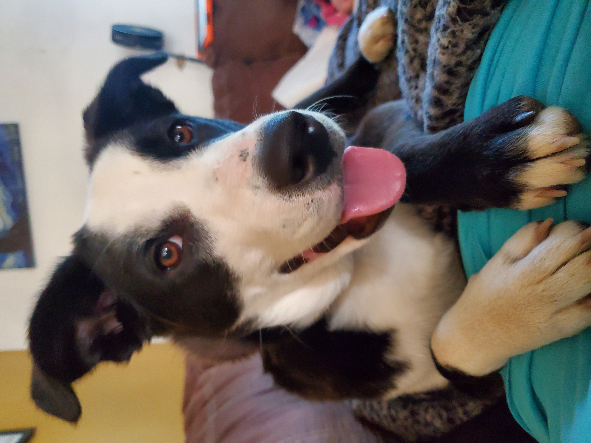
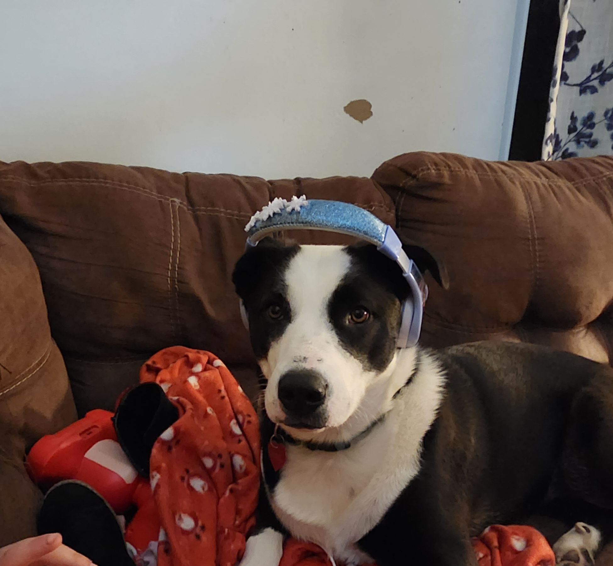
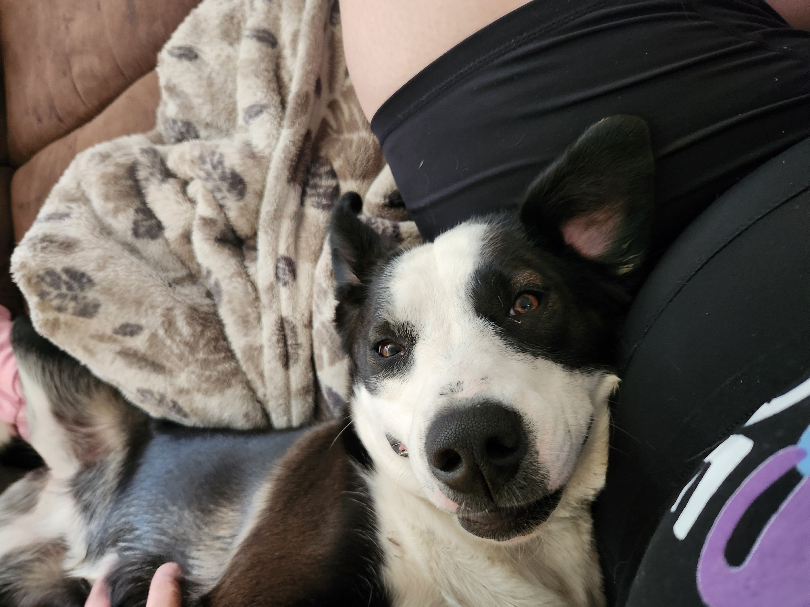
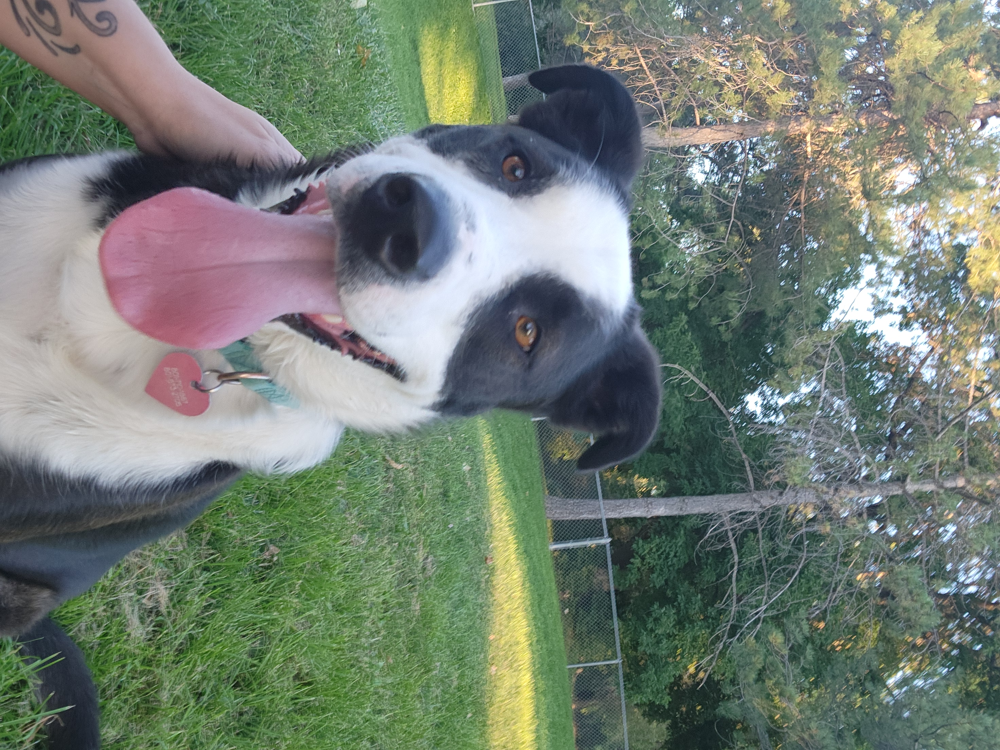
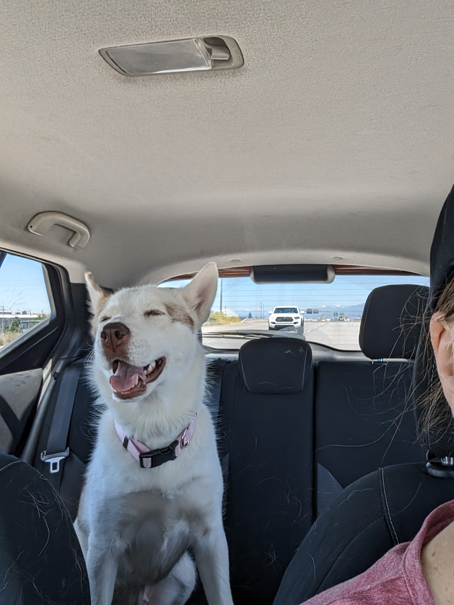
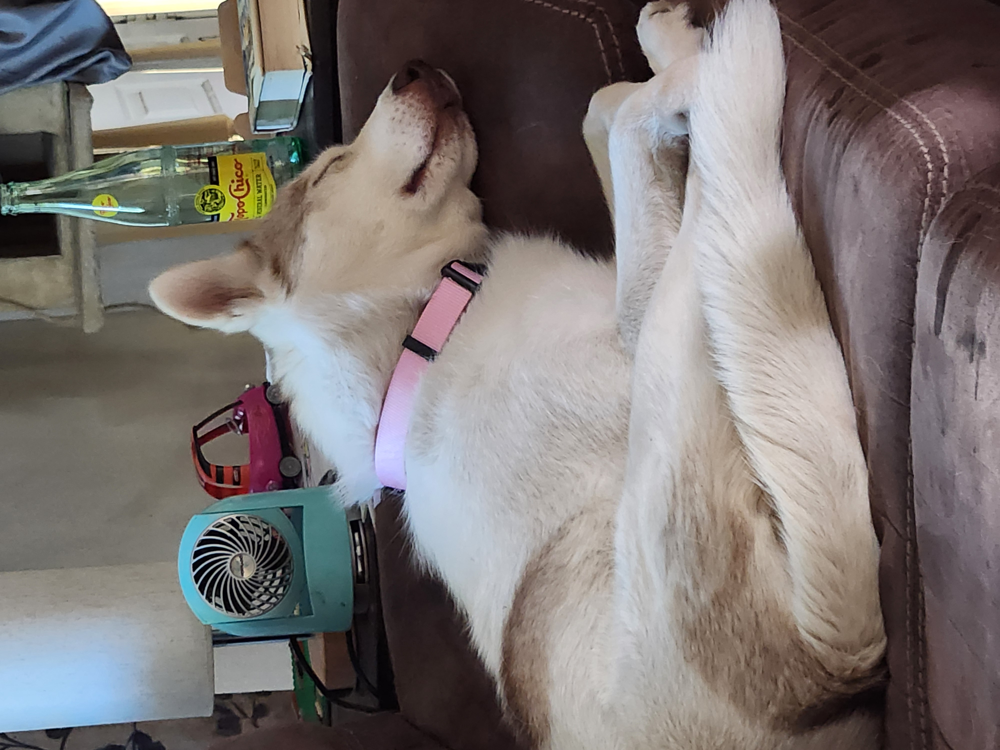
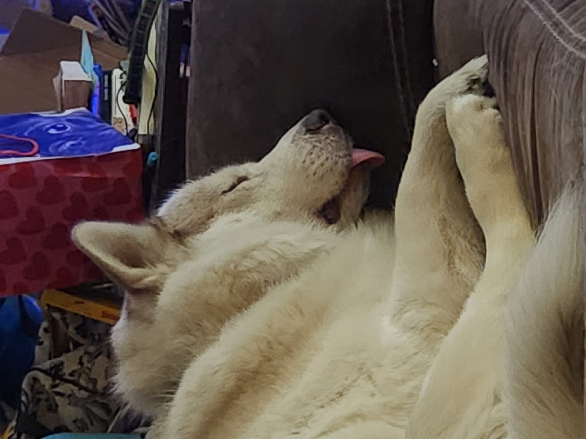
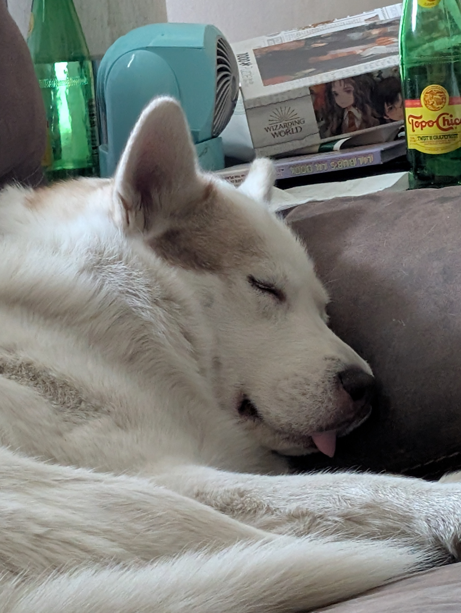
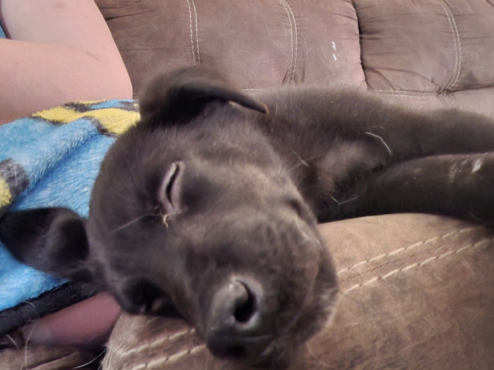

1 / 3

Group Slumber Party
2 / 3

At the Park
3 / 3

Layla and Ripley

Ripley is a 3 year old border collie mix. I adopted her from the South Salt Lake animal shelter. She was found after being hit by a car and brought into the shelter. She is a goof and loves to cuddle.






Layla was also a rescue from South Salt Lake animal shelter. I actually went to look at another dog, but it had been adopted and they showed me her. She is an alpha and loves her food. She has no problem giving you a talking to when she's not pleased. She's also the reason everything I own is covered in hair.





Reginald was picked up by West Valley City as a stray. He was only a few months old when I began fostering him. He is a rambunctious little fellow that still doesn't realize how big he has gotten. A chewing machine his nickname is "Gator."





Benelli is my first foster dog. She was surrended by her owner due to resource guarding. She also likes to snuggle and gets incredibly happy whenever I get home. She is a very sweet dog and I hope I can find her a forever home soon.